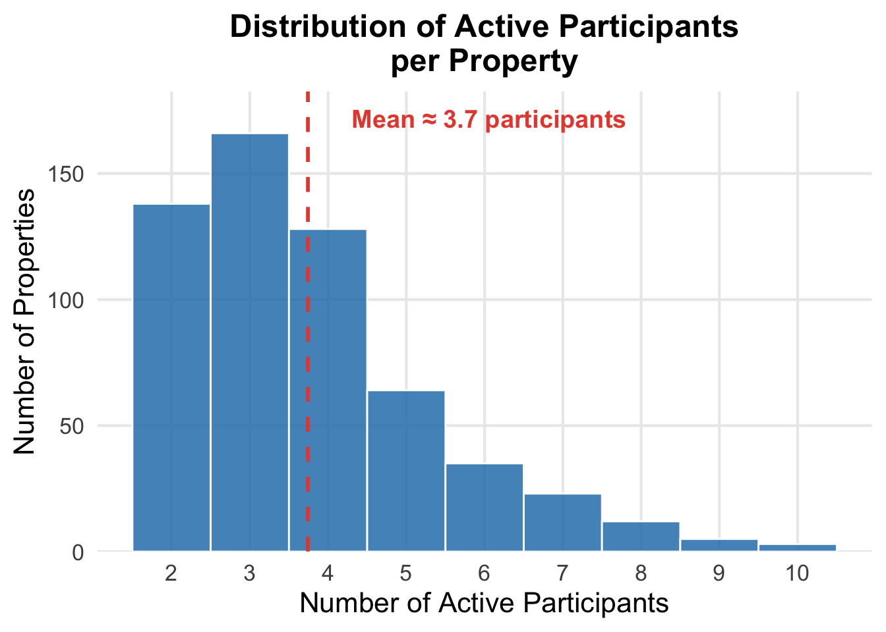
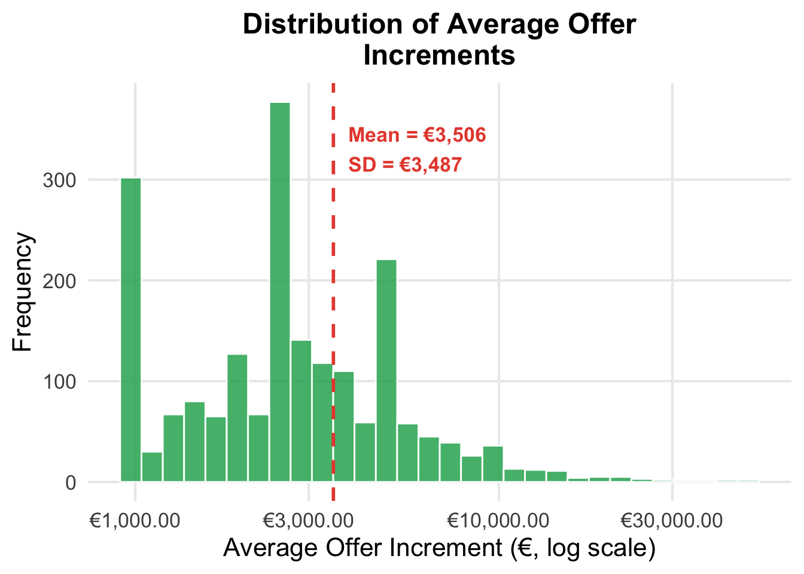
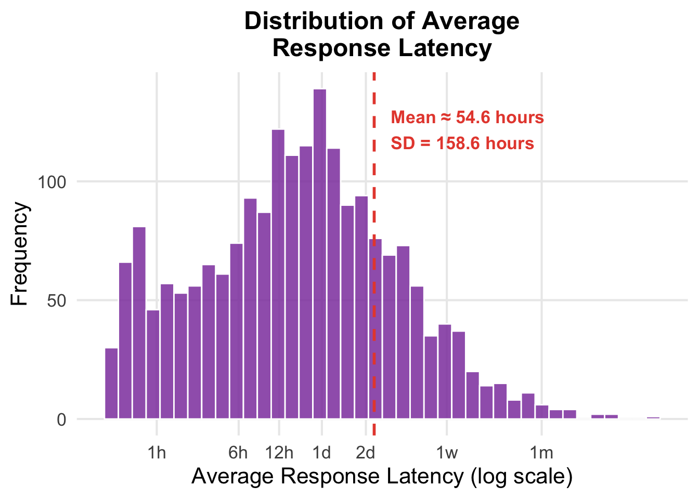
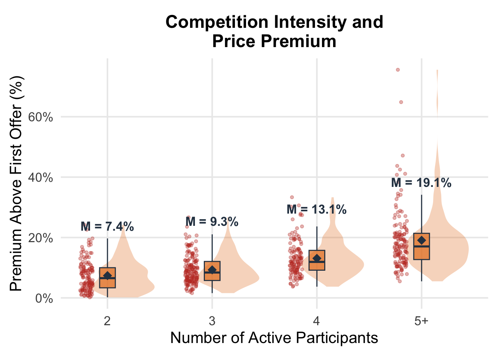
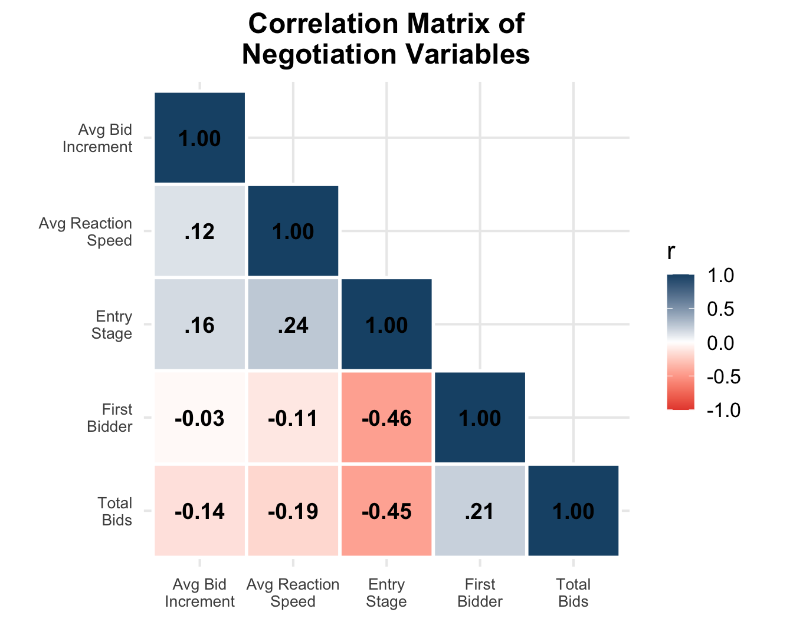

| Metric | Value |
|---|---|
| Properties | 574 |
| Unique buyer | 2,148 |
| Top-offer outcomes | 24% |
Field Evidence from Irish Residential Property
| Metric | Value |
|---|---|
| Properties | 574 |
| Unique buyer | 2,148 |
| Top-offer outcomes | 24% |
Property-level measures:
Participant-level measures:

Most properties attract only 2 or 3 active bidders.
However, a long tail of highly contested negotiations exists.

Bid increments are right-skewed as most are modest, but some buyers make very large jumps to signal commitment.
Heavy use of €1k, €2.5k, and €5k jumps.

Most responses come within hours, suggesting real-time competitive pressure, though some negotiations stretch over weeks.

More participants drive higher final prices, consistent with competitive arousal and auction fever dynamics.

Later entrants bid higher and respond more slowly.
First bidders place more offers but with smaller increments.